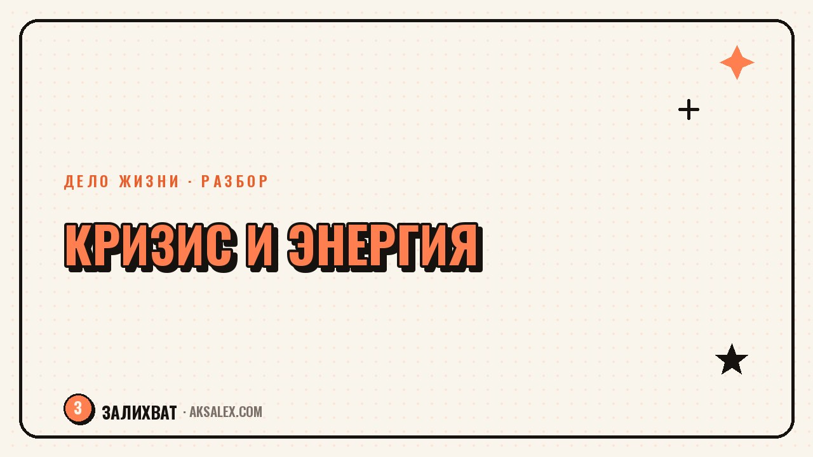

Кризис среднего возраста: куда девать энергию перемен

Кризис среднего возраста редко выглядит как в кино - с красной машиной и разводом по щелчку. Чаще это тихое, но навязчивое чувство: жизнь вроде устроена, а внутри копится беспокойная энергия, которая требует перемен прямо сейчас. Опасность в том, что эту энергию легко направить не туда - разрушить то, что строил годами, вместо того чтобы использовать её по назначению. Разберём, откуда берётся это состояние и как прожить его, не сжигая мосты, которые потом будет жаль.
Что на самом деле происходит в этом состоянии
К середине жизни у многих накапливается разрыв между тем, кем человек стал, и тем, кем представлял себя в двадцать лет. Этот разрыв не катастрофа сам по себе, но если его годами не замечать, он превращается в давление, которое однажды прорывается резким желанием всё поменять.
Важно отличать два сигнала под одной вывеской «кризис». Первый - реальное несоответствие жизни ценностям, накопившееся за годы компромиссов. Второй - временная усталость, которая ищет выход в радикальных решениях, но пройдёт сама через месяц-два отдыха.
Как отличить сигналы друг от друга
- Долгосрочное несоответствие ощущается стабильно уже год и больше
- Временная усталость усиливается после недосыпа и стресса, слабеет после отдыха
- Несоответствие связано с конкретными сферами жизни - работой, отношениями
- Усталость размыта и цепляется то за одно, то за другое без системы
Почему резкие решения редко помогают
Энергия перемен в этом состоянии мощная, и кажется логичным действовать немедленно: уволиться, разойтись, переехать. Проблема в том, что решения на пике эмоционального накала часто решают не ту проблему, которая назрела, а снимают симптом - острое ощущение застоя.
Через полгода после резкого разрыва человек нередко оказывается в похожей точке, только с меньшими ресурсами для старта. Перемены нужны, но их стоит направлять осознанно, а не вслепую, на волне раздражения.
Энергия кризиса - это не враг и не сигнал всё сломать. Это сигнал, что пора что-то честно пересмотреть.
Куда направить энергию вместо разрушения
Первый шаг - найти сферу, где перемены возможны без немедленного слома всей жизни. Это может быть хобби, которое давно откладывал, учёба в смежной области, небольшой проект на стороне. Такие шаги дают выход энергии и проверяют, в чём была нехватка.
Второй шаг - честно разобрать, какая сфера вызывает основное напряжение: работа, отношения, здоровье, самооценка. Часто кризис маскируется под общее «всё надоело», хотя проблема сосредоточена в одной области, и именно её стоит менять первой.
Безопасные способы выпустить энергию перемен
- Начать давно отложенное хобби или учёбу без привязки к карьере
- Пересмотреть режим дня и физическую активность
- Завести небольшой проект на стороне, не трогая основной доход
- Обсудить с партнёром конкретные пункты, которые действительно не устраивают
Разбор по сферам жизни
Разные сферы требуют разного темпа изменений, и смешивать их в одно решение «поменять всё» обычно увеличивает хаос. Полезно разложить тревогу по областям и для каждой подобрать свой масштаб действия.
Таблица ниже - способ структурировать мысли, чтобы энергия перемен шла в сферу, где реально назрел пересмотр, а не выливалась разом на всё подряд.
| Сфера | Частый сигнал кризиса | Что сделать сначала |
|---|---|---|
| Работа | Ощущение застоя и бессмысленности задач | Попробовать новую задачу внутри текущей роли |
| Отношения | Отдаление, рутина без разговоров по существу | Честный разговор о конкретных пунктах |
| Здоровье | Хроническая усталость, нет сил на перемены | Сон, движение, обследование у врача |
| Самооценка | Сравнение себя с другими, чувство упущенного | Разобрать реальные достижения, а не образ в голове |
| Смысл | Вопрос «и что теперь», отсутствие интереса | Вернуть маленькие источники удовольствия |
Когда стоит обратиться за поддержкой
Если беспокойство длится месяцами, мешает спать и работать, а мысли о разрушении жизни не отступают после отдыха - это повод обратиться к психологу, а не разбираться в одиночку. Кризис среднего возраста не диагноз, но затяжное тяжёлое состояние заслуживает поддержки специалиста.
Поддержка близких тоже важна, но у неё есть предел: партнёр или друг не обязан заменять терапию. Близкие дают опору и понимание, специалист помогает разобрать причины и найти стратегию - такое разделение снимает лишнюю нагрузку с отношений.
Сигналы, что пора к специалисту
- Беспокойство не отступает несколько месяцев подряд
- Нарушен сон или аппетит без видимой причины
- Мысли о разрушении жизни навязчивые, а не разовые
- Близкие уже не справляются с объёмом твоей тревоги
Частые вопросы
Как понять, что это кризис среднего возраста, а не временная усталость?
Кризис обычно ощущается стабильно уже год и больше и связан с конкретными сферами жизни. Временная усталость усиливается после недосыпа и стресса и слабеет после отдыха и перестройки режима.
Почему не стоит сразу увольняться или разводиться в кризисе?
Решения на пике эмоционального накала часто снимают симптом - острое ощущение застоя, а не решают реальную причину. Через время человек нередко оказывается в похожей точке с меньшими ресурсами для старта.
Куда направить энергию перемен, если страшно всё разрушить?
Начни с безопасной сферы - хобби, учёбы, небольшого проекта на стороне, изменения режима дня. Это даёт выход энергии и помогает понять, в какой именно сфере жизни назрел реальный пересмотр.
В каком возрасте обычно наступает кризис среднего возраста?
Чаще его описывают в диапазоне от 35 до 50 лет, но точных границ нет - состояние зависит от личной истории, а не только от цифры в паспорте. Важнее само ощущение разрыва, а не возраст как таковой.
Когда стоит обратиться к психологу из-за кризиса среднего возраста?
Если беспокойство длится месяцами, мешает спать и работать, а резкие мысли о разрушении жизни не отступают после отдыха - это повод обратиться за профессиональной поддержкой, а не разбираться в одиночку.
Раз тема оказалась полезной, вот что почитать следующим. Пошаговый план для тех, кто хочет найти своё дело, но не готов рисковать всем сразу.
Читать статью →а не вручную